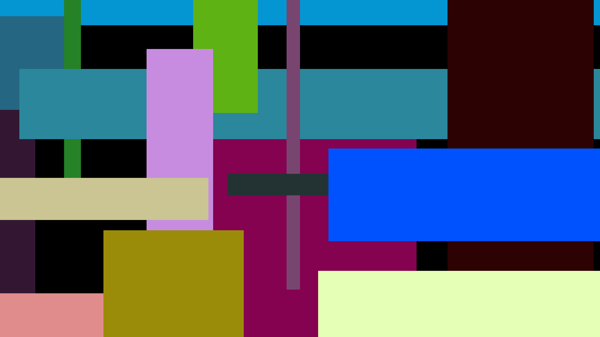

About Me
1. About Micah
My name is Micah Jaron. There's not much for me to say here other than that I'm highly creative and like music, coffee, dance, and sunshine.
I'm 28, raised in the US. I was raised Christian but ended up leaving that religion in later high school years as I was made to beleive that my queerness didn't fit within the rules of the Bible. However, the idea of aetheism didn't work for me. I chose to believe that there was a reason for existence but that "we weren't meant to know what it was". I skipped college and moved to Seattle right before 2020 where I worked as a barista for three years. After that, I ended up moving back home as my mental health grew worse.
The next several years was a process of falling completely apart and finding my way back again, my
Today I'm able to enjoy a version of myself that's far more authentic. The lessons I learned allowed me to understand my health and leave behind 90% of the health issues I used to face. Now, most of the time, I'm able to understand what is at the root cause of the issues I face. Since then, I've dedicated the majority of my free time to finding a way that's authentic to me to share what I've learned about health and wellness and what has helped me find freedom. A fair amount of my art is dedicated towards that cause as well.
2. About My Art
MY WRITING
3. Why I Built The Website From Scratch
In order to understand how to shop for food more intentionally, we have to understand a bit more about nature. First and foremost, you as a human are nature. You are nature, not separate from. When you say nature, you are referring to yourself. You embody and are made from all the same elements, atoms, and molecules that animals, plants, rocks, etc. are made from.
In order to understand how to shop for food more intentionally, we have to understand a bit more about nature. First and foremost, you as a human are nature. You are nature, not separate from. When you say nature, you are referring to yourself. You embody and are made from all the same elements, atoms, and molecules that animals, plants, rocks, etc. are made from.
In order to understand how to shop for food more intentionally, we have to understand a bit more about nature. First and foremost, you as a human are nature. You are nature, not separate from. When you say nature, you are referring to yourself. You embody and are made from all the same elements, atoms, and molecules that animals, plants, rocks, etc. are made from.
This website was built from scratch with HMTL and CSS coding by yours truly with the intention of encouraging internet proficiency. Read more about the intention here .
Micah Jaron